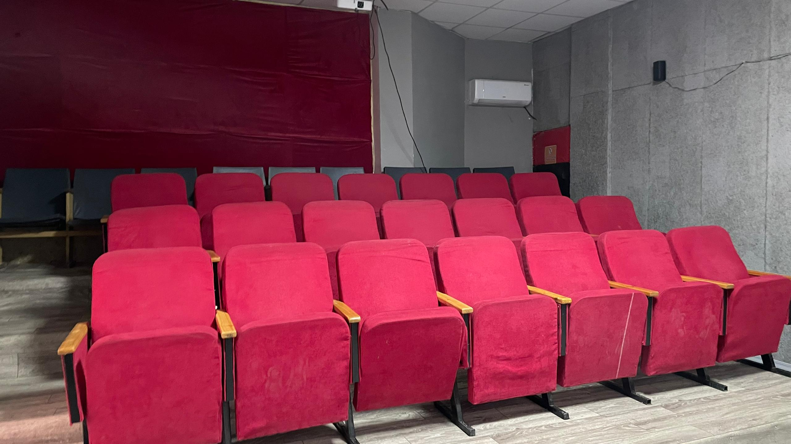
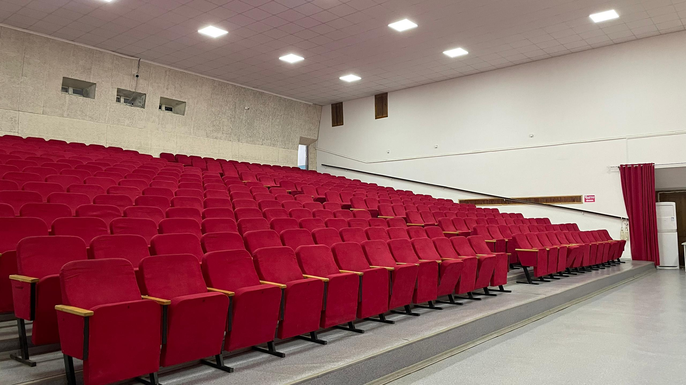

Семетей кинотеатры
“Семетей” кинотеатры 1985–1986-жылдары мамлекеттик каражаттар менен, Мамлекеттик комитеттин демилгеси менен курулган. Талас областынын Кызыл-Адыр айылында, Айтматов районуна караштуу.
Бүгүнкү күндө “Семетей” кинотеатры Кыргыз Республикасынын Маданият, маалымат, жаштар саясаты министрлигине караштуу Мамлекеттик кинодирекциясынын карамагында.
Расмий аты: Айтматов райондук мамлекеттик “Семетей” кинотеатры. Каржылоо мамлекеттик бюджеттен жүргүзүлөт.
Жалпы кызматкерлердин саны — 8.

